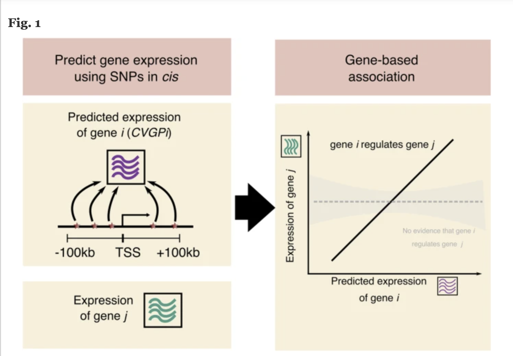
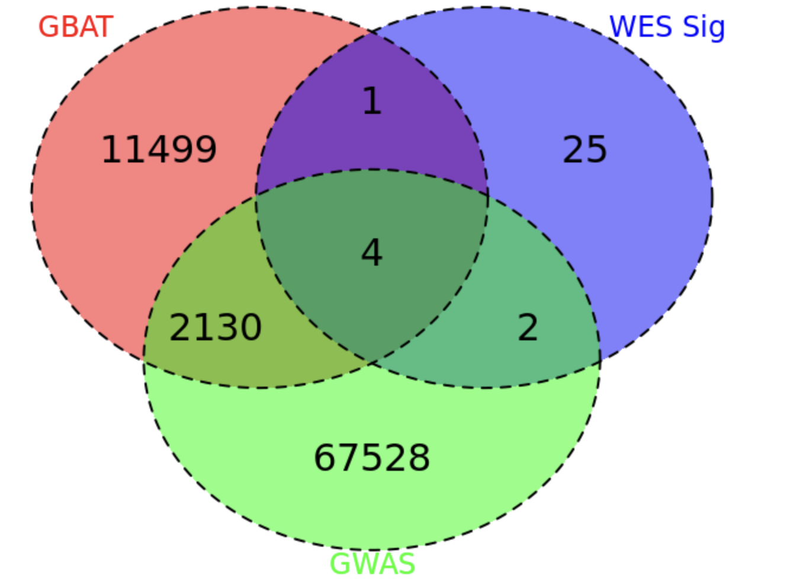
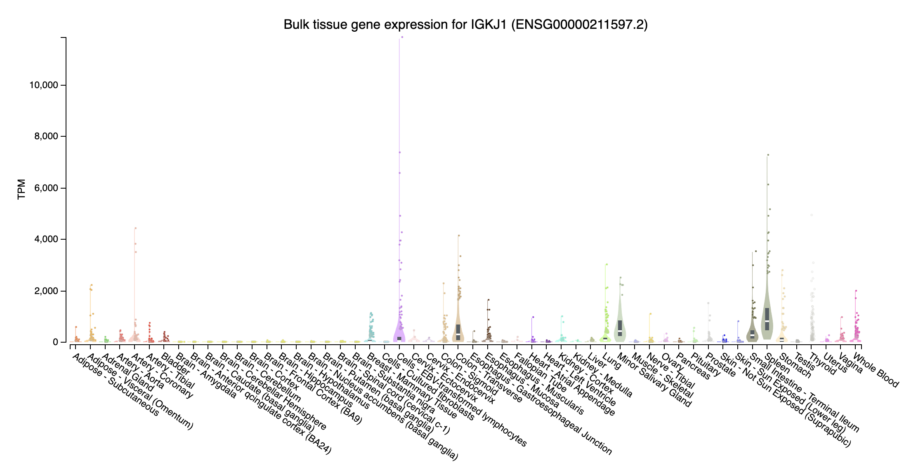
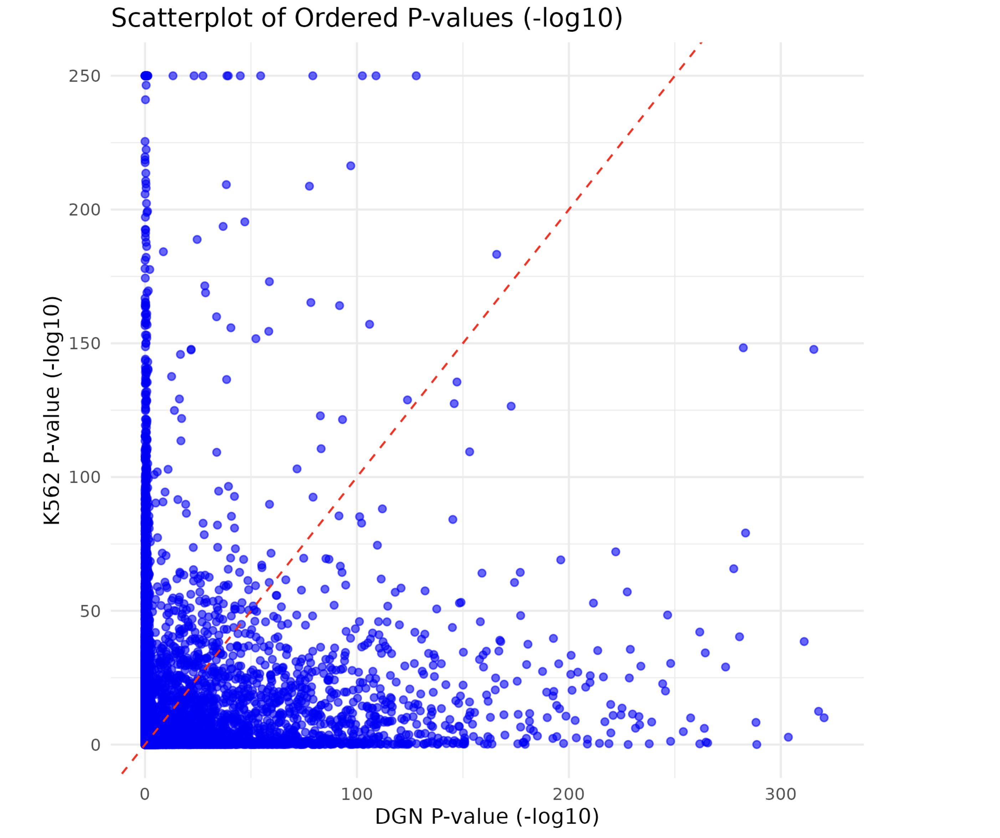

Last updated: 2025-10-29
Checks: 7 0
Knit directory: GradPLog/
This reproducible R Markdown analysis was created with workflowr (version 1.7.1). The Checks tab describes the reproducibility checks that were applied when the results were created. The Past versions tab lists the development history.
Great! Since the R Markdown file has been committed to the Git repository, you know the exact version of the code that produced these results.
Great job! The global environment was empty. Objects defined in the global environment can affect the analysis in your R Markdown file in unknown ways. For reproduciblity it’s best to always run the code in an empty environment.
The command set.seed(20220610) was run prior to running
the code in the R Markdown file. Setting a seed ensures that any results
that rely on randomness, e.g. subsampling or permutations, are
reproducible.
Great job! Recording the operating system, R version, and package versions is critical for reproducibility.
Nice! There were no cached chunks for this analysis, so you can be confident that you successfully produced the results during this run.
Great job! Using relative paths to the files within your workflowr project makes it easier to run your code on other machines.
Great! You are using Git for version control. Tracking code development and connecting the code version to the results is critical for reproducibility.
The results in this page were generated with repository version d56a60c. See the Past versions tab to see a history of the changes made to the R Markdown and HTML files.
Note that you need to be careful to ensure that all relevant files for
the analysis have been committed to Git prior to generating the results
(you can use wflow_publish or
wflow_git_commit). workflowr only checks the R Markdown
file, but you know if there are other scripts or data files that it
depends on. Below is the status of the Git repository when the results
were generated:
Ignored files:
Ignored: .DS_Store
Ignored: analysis/.Rhistory
Note that any generated files, e.g. HTML, png, CSS, etc., are not included in this status report because it is ok for generated content to have uncommitted changes.
These are the previous versions of the repository in which changes were
made to the R Markdown (analysis/2025.Rmd) and HTML
(docs/2025.html) files. If you’ve configured a remote Git
repository (see ?wflow_git_remote), click on the hyperlinks
in the table below to view the files as they were in that past version.
| File | Version | Author | Date | Message |
|---|---|---|---|---|
| html | a76a6dc | zq2209 | 2025-10-29 | Build site. |
| Rmd | 33224c2 | zq2209 | 2025-10-29 | update |
| html | a048dbb | zq2209 | 2025-10-28 | Build site. |
| Rmd | 1bbc88d | zq2209 | 2025-10-28 | update |
| html | 1bbc88d | zq2209 | 2025-10-28 | update |
| Rmd | c709934 | zq2209 | 2025-10-28 | update |
| html | c709934 | zq2209 | 2025-10-28 | update |
| Rmd | 2e5010c | zq2209 | 2025-10-28 | update |
| html | b68a6ce | “John | 2025-10-22 | Build site. |
| Rmd | 933b6ae | “John | 2025-10-22 | update |
| html | 97da75e | zq2209 | 2025-10-22 | Build site. |
| Rmd | 851497d | zq2209 | 2025-10-22 | add jurakt perturb |
| html | d387fd3 | zq2209 | 2025-09-24 | Build site. |
| Rmd | 7a73d1a | zq2209 | 2025-09-24 | add k562 relavence analysis |
| html | ad95a9e | “John | 2025-05-20 | Build site. |
| Rmd | 18e165c | “John | 2025-05-20 | update progression |
| html | 9d8f4e0 | “John | 2025-05-20 | Build site. |
| Rmd | 6cf4626 | “John | 2025-05-20 | update progression |
| html | a5cd70b | “John | 2025-02-19 | Build site. |
| Rmd | a0a2f09 | “John | 2025-02-19 | build sites |
| html | a0a2f09 | “John | 2025-02-19 | build sites |
| Rmd | 4454b4c | “John | 2025-02-19 | build sites |
| html | 4454b4c | “John | 2025-02-19 | build sites |
| Rmd | b0d8584 | “John | 2025-02-19 | build sites |
| html | ed90420 | “John | 2025-02-19 | Build site. |
| Rmd | d50c928 | “John | 2025-02-19 | build sites |
| html | d50c928 | “John | 2025-02-19 | build sites |
| Rmd | f0563f3 | “John | 2025-02-19 | build sites |
| html | f0563f3 | “John | 2025-02-19 | build sites |
| Rmd | 0b4a87d | “John | 2025-02-19 | build sites |
| html | 431eccc | “John | 2025-02-19 | Build site. |
| Rmd | 9f34755 | “John | 2025-02-19 | build sites |
| html | 9f34755 | “John | 2025-02-19 | build sites |
| Rmd | b26e62d | “John | 2025-02-19 | build sites |
| html | 8854855 | “John | 2025-02-11 | Build site. |
| Rmd | 103cb30 | “John | 2025-02-11 | build site |
| html | 296c9e2 | “John | 2025-02-10 | Build site. |
| Rmd | 15f4806 | “John | 2025-02-10 | build site |
| html | 70deb4c | “John | 2025-02-05 | Build site. |
| html | 1dc0e4d | “John | 2025-02-04 | Build site. |
| Rmd | 315b26c | “John | 2025-02-04 | build_site |
| html | 86817dc | “John | 2025-02-04 | Build site. |
| html | 4400a1e | “John | 2025-02-04 | Build site. |
| Rmd | a04e379 | “John | 2025-02-04 | build_site |
| html | a04e379 | “John | 2025-02-04 | build_site |
| Rmd | 7b92cf4 | “John | 2025-02-04 | build_site |
| html | 7b92cf4 | “John | 2025-02-04 | build_site |
| Rmd | 44013b9 | “John | 2025-02-04 | build_site |
| html | 44013b9 | “John | 2025-02-04 | build_site |
| Rmd | c405b4f | “John | 2025-02-04 | build_site |
| html | c405b4f | “John | 2025-02-04 | build_site |
| Rmd | 910013f | “John | 2025-02-04 | build_site |
| Rmd | 4688121 | “John | 2025-02-04 | build_site |
| html | 4688121 | “John | 2025-02-04 | build_site |
| Rmd | 927813b | “John | 2025-02-04 | build_site |
| html | dd58251 | “John | 2025-02-03 | Build site. |
| html | f5e82f5 | “John | 2025-02-03 | Build site. |
| html | ef8dd5e | “John | 2025-02-03 | Build site. |
| Rmd | 63b8b33 | “John | 2025-02-03 | build sites |
| html | ef2284b | “John | 2025-02-03 | Build site. |
| html | bcff4bd | “John | 2025-02-03 | build sites |
| Rmd | ded2ce1 | “John | 2025-02-03 | build sites |
| html | 0a7be27 | “John | 2025-02-03 | Build site. |
| Rmd | 76ffb2c | “John | 2025-02-03 | update |
| html | 76ffb2c | “John | 2025-02-03 | update |
| Rmd | 2d02830 | “John | 2025-02-03 | update |
| html | 2d02830 | “John | 2025-02-03 | update |
| Rmd | effd6aa | “John | 2025-02-01 | update |
| Rmd | 390b75e | “John | 2025-01-31 | update |
| html | 390b75e | “John | 2025-01-31 | update |
Week 1: Jan 6 - Jan 12
Current Research on IBD
This section summarize the WES and GWAS studies on IBD, giving background information on the disease and current research on the diease.
Disease Background
General Background of IBD

IBD is Chronic inflammation influenced by genetics, environment, microbiota, and immunity.
Genetic Contribution
Crohn’s Disease (CD): 15% family history; twin studies show 50% concordance in monozygotic (MZ) twins vs. less than 10% in dizygotic (DZ) twins.
GWAS identified 163 loci; trans-ethnic studies identified an additional 38 loci.
Epigenetics
Genome-environment interactions affect disease progression.
Emerging research focuses on the role of epigenetics in IBD.
Genetic Associations in IBD
NOD2: First CD-associated gene (2001), with key variants R702W and G908R.
Autophagy Genes: ATG16L1, LRRK2, and IRGM predispose individuals to IBD.
IL-10 Receptor Mutations: IL10RA, IL10RB are linked to colitis.
IBD-Associated Loci: ~240 loci identified (as of 2022); 30 shared between CD and UC.
CD Predictive Loci: FOXO3, IGFBP1, and XACT as potential markers.
Large-Scale Exome Sequencing Identifies Novel Genes and Pathways in Crohn’s Disease
Sazonovs, Aleksejs et al.
Motivation
CD is a chronic inflammatory disorder with a strong genetic component.
GWAS has primarily focused on common variants, but rare coding variants remain under-explored.
Study Design

Findings
- Single Variant Analysis: 94 out of 116 variants replicated in discovery datasets.

- Burden Test: Missense vs. frameshift variants analyzed.

Takeaways
- Exome Sequencing Complements GWAS
- Addresses gaps in genetic architecture (low-frequency and rare variants) that earlier CD GWAS meta-analyses could not observe.
- Significance of Coding Variants:
- Coding variants, although fewer than noncoding variants, are highly enriched for associations with both common and rare diseases.
- Tend to have stronger effects due to natural selection, which often keeps their frequencies low.
- Provide direct links to specific genes and pathogenic mechanisms, unlike noncoding variants.
- Key Findings in CD Pathogenesis:
- Novel genes such as PDLIM5, SDF2L1, HGFAC, PAF-R, and CCR7 emphasize the role of mesenchymal cells (MCs) in intestinal inflammation.
- Therapeutic Implications:
- Findings highlight the potential for therapeutic strategies targeting mesenchymal niche balance to address CD pathogenesis.
- Genetic evidence for drug targets is valuable for driving drug development.
- Future Directions:
- Expanded sequencing efforts in ulcerative colitis and integrated analyses with larger GWAS studies are expected to identify more linked genes.
Genome-wide association study implicates immune activation of multiple integrin genes in inflammatory bowel disease
de Lange, K., Moutsianas, L., Lee, J. et al.
Motivation
Current treatments involve immunomodulators, but patients often experience side effects or treatment resistance.
GWAS and Immunochip studies have identified risk loci but have had limited therapeutic impact.
Study Design
Findings
Identified 25 new GWAS loci
- 4 loci with significant variants
- SLAMF8
- RORC
- PLCG2
- NCF4
- Another 4 loci within integrin gene
- 3 loci showed larger than 90% probability have colocalization with eQTL
- 1 loci showed intermediate evidendence
Takeaways
Integrins are not only important in cell trafficking but can also participate in cellular signaling.
Highlighted integrins as key therapeutic targets:
- Monoclonal antibodies like vedolizumab and etrolizumab targeting integrins have shown efficacy in IBD.
- Identified SMAD7, a modulator of \(TGF-\beta\) signaling, as a potential target for Crohn’s disease treatment.
Emphasized the importance of gut-selective therapies to minimize risks like progressive multifocal leukoencephalopathy (PML).
These discoveries have demonstrated that the effect sizes of GWAS associations do not necessarily reflect the importance or therapeutic relevance of their underlying biological pathways.
Method
Prioritizing disease-mediating genes leveraging trans-gene regulation
Motivation
- Complex Genetic Architecture of Diseases:
- Complex traits are highly polygenic, involving numerous genes with varying effect sizes.
- The omnigenic model posits that all expressed genes in disease-relevant tissues contribute to disease risk, but not all genes have equal importance.
- Importance of Disease-Mediating Genes:
- Disease-associated genes can be categorized into:
- Disease-mediating genes: Directly affect the disease.
- Peripheral genes: Indirectly influence the disease through trans-regulatory networks.
- Identifying disease-mediating genes is critical for uncovering pathways and mechanisms relevant to treatment development.
- Disease-associated genes can be categorized into:
- Limitations of Current Gene Prioritization Methods:
- GWAS:
- Identifies important disease-mediating genes but may miss many due to lack of power in detecting low-frequency or rare variants with large effects.
- Rare Variant Methods:
- Gene-based approaches, like burden tests in WES, improve detection but are limited by current sample sizes.
- Graph and Canonical Correlation Models:
- Recent approaches predict candidate genes or link expressions to variants but fail to explicitly differentiate disease-mediating from peripheral genes or reveal trans-regulatory networks.
- GWAS:
- Challenges with Cis-eQTLs in Disease Gene Discovery:
- Disease genes often lack strong cis-QTL signals due to stronger selective constraints.
- Cis-eQTL limitations necessitate focusing on trans-QTLs, as their target genes share similar selective constraints with disease genes.
- Significance of Trans-Regulation:
- Trans-regulatory networks explain a large portion (~70%) of disease heritability.
- Understanding trans-regulation provides insights into collaborative gene contributions to disease risk and highlights the importance of completing trans-gene regulatory networks for understanding complex trait genetics.
COTA
COTA Model: Integrates trans-regulatory effects to identify disease-mediating genes.
GBAT: Predicts gene expression using machine learning models.

- DACT: Estimates gene effects from burden tests.

Findings
COTA enhances GWAS interpretability by revealing trans-regulatory networks.
New gene discoveries provide insights into disease mechanisms.
Potential for targeted therapy development based on genetic findings.
Code
Codes for COTA are in COTA Package.
Summary of codes are in code summary.
Week 2: Jan 13 - Jan 19
Data
Whole Exon Sequencing
Files
- UC: Burden tests with UC only
- CD: Burden tests with CD only
- IBD: Burden tests with other types of IBD
Variants analyzed
- NSYN: Non-synonymous Variants
- nsyn.singleton: variants appear only once across all samples
- nsyn.0.001: allele frequancy less than 0.001
- NSYN_AM: Non-synonymous variants with an AlphaMissense score greater
than 0.2
- nsyn.singleton: variants appear only once across all samples
- nsyn.0.001: allele frequancy less than 0.001
- pLoF: PTV variants that are also flagged as high confidence (HC) by
Loftee
- pLoF.singleton: variants appear only once across all samples
- pLoF.nsyn.0.001: allele frequancy less than 0.001
Variables
- MarkerName: Gene name
- Allele1: Study allele
- Allele2: Ref allele
- Freq1: Allele frequency of Allele1
- Effect: Effect size
- StdErr: Standrad error of effect size
- log(P): Log p-value of effect size
- Direction: Direction of effect size from two platform
- HetISq: Heterogeneity statistics I-square
- HetChiSq: Chi-square statistics for heterogeneity that effect for two platform are come from same distribution
- HetDf: Degree of freedom
- logHetP: Log p-value of HetChiSq
EDA of data
- Basic visualizations of p-values were performed,
including QQ plots and histograms, for
burden tests involving singleton and <0.001
NSYN/LoF variants in Crohn’s Disease (CD).
- The overall distribution of p-values for CD
with NSYN and LoF variants appears nearly identical.
- Using a uniform distribution, the points predominantly align with the line, exhibiting slight curvature.
- The overall distribution of p-values for CD
with NSYN and LoF variants appears nearly identical.

- Significant heterogeneity across all nine studies
was assessed.
- Two genes met the significance threshold of
0.05/20,000 (total genes: 18,641):
- SULT1A1 (Sulfotransferase Family 1A Member 1):
Encodes sulfotransferase enzymes that facilitate sulfate
conjugation of various hormones, neurotransmitters, drugs, and
xenobiotic compounds. These cytosolic enzymes differ in tissue
distribution and substrate specificity.
- PLXND1 (Plexin D1): Enables protein
domain-specific binding activity and is involved in
axonogenesis regulation, semaphorin-plexin
signaling, and synapse assembly. Also plays a
role in circulatory system development,
salivary gland branching, and kidney
development, and is primarily located in
lamellipodia.
- SULT1A1 (Sulfotransferase Family 1A Member 1):
Encodes sulfotransferase enzymes that facilitate sulfate
conjugation of various hormones, neurotransmitters, drugs, and
xenobiotic compounds. These cytosolic enzymes differ in tissue
distribution and substrate specificity.
- The paper reported 43 sites with significant
heterogeneity, whereas only two genes were identified
in this analysis.
- The original study applied a heterogeneity-of-effect
test between the Nextera and Twist
discovery cohorts using IVW PHET < 0.0001
as the threshold.
- The discrepancy may be due to differences in heterogeneity
statistics and a more lenient p-value cutoff
in this analysis.
- When 0.0001 was used as the threshold, 32 genes exhibited significant heterogeneity, including SULT1A1 and PLXND1.
- Two genes met the significance threshold of
0.05/20,000 (total genes: 18,641):
- Basic summary of genes in the WES dataset:
- 18,641 genes are present in the dataset.
- 15,309 genes are included in all nine
studies.
- 3,332 genes are shared across some but not all
studies.
- In the CD with NSYN 0.01 study, 64
genes lack burden tests on singleton
variants.
- Some genes do not have variants that appear in only one sample.
- 18,641 genes are present in the dataset.


Trans Effect
- trans-eQTL:
- eQTLGen
- Whole blood
- GBAT
GWAS
The dataset consists of 29,849 East Asian samples from China, Hong Kong SAR, Japan, and the Republic of Korea, and 368,819 European samples from the U.S., NR, and Finland.
The total number of cases in the dataset is 45,106, while the total number of controls is 353,562.
Among the East Asian cohort, there are 14,393 cases and 15,456 controls.
Among the European cohort, there are 30,713 cases and 338,106 controls.
The majority of cases are diagnosed with Crohn’s Disease (CD) and Ulcerative Colitis (UC), with a smaller number of other Inflammatory Bowel Disease (IBD) cases.
The East Asian samples represent approximately 7.5% of the total dataset.

Week 3: Jan 20 - Jan 26
Analysis
Data
WES Data
- CD with Variant Frequency less than 0.001
- Total Genes: 18,620
Genes Detected by WES
- Total of 32 significant genes.
- Key Genes Identified:
- NOD2: Plays a role in autophagy, aiding in the destruction of bacteria, viruses, and harmful substances.
- SBNO2: Differentially regulated by lipopolysaccharide and IL-10 (Nature Link).
- ATG4C: Involved in autophagy, the process of degrading proteins and organelles.
- IGHV Family: Immunoglobulin heavy variable genes.
- AHNAK2: Encodes a large nucleoprotein.
SNP-Based Analysis
- GWAS Significant SNPs (p < 1e-4): 69,654 SNPs
- Overlap with trans-eQTL SNPs: 1033 SNPs
- Total Trans-eQTL SNPs: 10,317
Gene-Based Analysis
- GWAS Significant Genes** (p < 1e-4): 69,654 SNPs
- Overlap of GWAS Nearest Gene with GBAT trans regulation target: 2134
- Total Trans-eQTL Gene1: 13,634
Week 4: Jan 27 - Feb 2
Findings
Genes Detected by COTA (SNP-Based)
Significant Gene Pairs:
- Shown in significant gene pairs
WES Significant Gene2: NOD2, SBNO2
WES Non-Significant Gene2: CARD9, CEACAM8, USP36
Network of detected gene:

Genes Detected by COTA (Gene-Based)
Significant Gene Pairs:
- Shown in significant gene pairs
WES Significant Gene2: NOD2, AHNAK2
WES Non-Significant Gene2: SH3YL1, TMED6, CEP104, SPIRE2, ING1, EGLN3, PLEKHO2, EML4, ALOX5
Network of detected gene:

Week 5: Feb 3 - Feb 9
Perturb-seq data
How does the data generated
what is cell line
trans regulation target, gene_id?
- direction of correlation, which one regulate which?
overlap of burden test significant genes and target genes is larger
13407 total regulator, and all 32 burden test genes are in regulator
4165 of trans target, 20 burden test genes are in trans target
QTL calculation
why negative binomial
- Count data that over dispersed?
Week 6: Feb 10 - Feb 16 - Discussion
Why most of burden tests significant genes are not detected by COTA
Check the overlap of burden tests significant genes and trans regulation target
- SNP based
- 5 significant genes from the burden tests (AHNAK2, DNMT3A, NOD2, SBNO2, ATG4C) overlap with the trans-eQTL genes used for analysis.

- Gene based
- 6 significant genes from the burden tests (AHNAK2, DNMT3A, NOD2, SBNO2, ATG4C) overlap with the trans regulation targets used for analysis.

Check DGN matrix
There are still 5 significant burden test genes (AHNAK2, DNMT3A, NOD2, SBNO2, ATG4C) overlapped with DGN.
Check GTEx
Bulk gene expression have all the significant burden test genes.
Missed burden test significant genes
immunoglobulin heavy joining
- IGHJ4 (immunoglobulin heavy joining 4; chr14:105864215-105864260:-): Highly expressed at Cells - EBV-transformed lymphocytes and Spleen, intermediate expression in Whole blood
immunoglobulin heavy variable
- IGHV4-34 (immunoglobulin heavy variable 4-34; chr14:106373663-106374145:-): Highly expressed at Cells - EBV-transformed lymphocytes
immunoglobulin kappa joining
- IGKJ1 (immunoglobulin kappa joining 1; chr2:88861886-88861923:-): Highly expressed at Cells - EBV-transformed lymphocytes, intermediate expression in Spleen and Colon - Transverse, Small Intestine - Terminal Ileum, Minor Salivary Gland

immunoglobulin kappa variable
IGKV4-1 (immunoglobulin kappa variable 4-1; chr2:88885397-88886153:+): Highly expressed at Cells - EBV-transformed lymphocytes

- immunoglobulin heavy diversity
- IGHD3-16 (immunoglobulin heavy diversity 3-16; chr14:105895634-105895670:-): Highly expressed at Lung, Cells - EBV-transformed lymphocytes, and Spleen
TNFRSF6B (TNF receptor superfamily member 6b; chr20:63696652-63698641:+): Highly expressed in Lung???

Overlapped burden test significant genes
- NOD2 (nucleotide binding oligomerization domain containing 2; chr16:50693588-50734041:+): Expression in Whole Blood are higher than others

- ATG4C (autophagy related 4C cysteine peptidase; chr1:62784132-62865516:+): Expressed in all tissues, higher expression in brain tissue

- SBNO2 (strawberry notch homolog 2; chr19:1107637-1174268:-): Expression in Whole Blood are higher than others
- AHNAK2 (AHNAK nucleoprotein 2; chr14:104937762-104978374:-): Higher expression in skin tissue then whole blood
- DNMT3A (DNA methyltransferase 3 alpha; chr2:25227855-25342590:-): Expressed in all tissues, no really extream TPM values in some tissue

Check TPM of genes on bulk data
- Near all gene expression for those missed genes in trans effect are higher, probably due to have extreme high TPM in some tissues, whereas those overlapped genes don’t have such extreme expression.
Why there are many more significant genes than Sazonovs et al 2022
The data shared to us are different than 2022, we have newer version of their results.
Samples are different than what used in 2022 paper, the sample size are similar but samples are different.
New exome capture method that could capture exome region previously not included.
Genes may also be not totally consistent with 2022
- Version of gene annotation are different in two platform
Immunoglobulin genes are filtered out in the analysis by thinking it as artifact
The samples in the consortium come from different hospitals
There is a possibility that a small number of immortalized cell line samples may have been mixed in.
These cell lines are derived from some B cells, and immunoglobulin gene region in B cells is highly recombinant.
Week 7: Feb 17 - Feb 23
Integrate perturb data with COTA
Preprocessing data
Originally 14680 targets; 4734 regulators
Apply two steps filter on genes
Filter out genes that don’t have a matched gene name
- drop 1536 targets and 1 regulator
Select regulators that are GWAS gens (nearest genes of GWAS loci)
- 12730 targets and 1337 regulators remain for analysis
Among 12370 targets, 4 WES significant genes were included.
DNMT3A, TNFRSF6B, ATG4C, SBNO2
NOD2 and AHNAK2 were not included in targets
NAs in the p-value matrix of 12730 targets (rows) and 1337 regulators (columns)
These pairs (regulator - target) don’t exist in the perturb-seq result
Fill in with 0.99 to make sure COTA analysis can be applied
Visualization of pvalue
Basic visualizations of p-values were performed, including QQ plots and histograms, for all the gene pairs and filtered gene pairs (GWAS pairs).
The overall distribution of p-values for all pairs and GWAS pairs appears nearly identical.
Using a uniform distribution, the points predominantly align with the line, exhibiting slight curvature.
Distribution of p-value for all pairs
Distribution of p-value for GWAS pairs
Results
Two WES significant genes are also detected by COTA:
- DNMT3A, TNFRSF6B
| DNMT3A | TNFRSF6B | |
|---|---|---|
| Min | 0.000049 | 0.000122 |
| Max | 0.999019 | 0.999877 |
| Mean | 0.501003 | 0.489069 |
| Median | 0.499982 | 0.471279 |
| SD | 0.295453 | 0.306062 |
ATG4C and SBNO2 are not detected by COTA
- Check the trans effect of these two genes in perturb-seq data
| ATG4C | SBNO2 | |
|---|---|---|
| Min | 0.000533 | 0.000260 |
| Max | 0.999828 | 0.997488 |
| Mean | 0.491614 | 0.507823 |
| Median | 0.489878 | 0.492926 |
| SD | 0.292780 | 0.296452 |
CARD9 is again detected by COTA
Network
Week 8: Feb 24 - Mar 2
Annotating the networks
After having the networks, the following question is how confident about our result and how to interpret genes identified. To explore this, we annotate these networks as following:
GWAS Significance:
Nodes are colored based on GWAS p-values.
Each gene is assigned the smallest p-value from nearby SNP.
For regions with multiple genes, the smallest p-value of genes is used.
Open Targets Genetics (OTG):
Over 5000 genes are associated with CD, but many have low Association Scores.
A threshold of 0.3 was applied, selecting 159 Open Target genes.
Gene names are colored blue.
WES Genes:
Gene names are colored red.
Genes present in both Open Targets and WES datasets are colored purple.
The following are annotated network from perturb-seq data:
Key findings:
A lot of hub are not GWAS significant genes, while peripheral genes are more likely GWAS significant genes. An explanation for this findings is that core genes tend not to be common variants, having more selection pressure.
Week 9-10: Mar 3 - Mar 16
One of the goal of this project is really to interpret and explain the GWAS findings of IBD. A simple way to do this is to summarize how many GWAS significant loci are core or peripheral genes. We summarize COTA result as the following:
COTA Genes Detected
| COTA peripheral genes | COTA master peripheral genes | COTA core genes | Total number of genes explained in COTA network (peripheral + core) | |
|---|---|---|---|---|
| SNP Based | 5 | 7 | 5 | 17 |
| Gene Based | 7 | 0 | 7 | 14 |
| Perturb Seq | 64 | 18 | 24 | 106 |
| Three Analysis (Unique Genes) | 76 | 25 | 31 (4 genes overlapped in three analysis) | 132 |
- Number of peripheral genes (regulate 1 core gene), number of master peripheral genes (regulate > 1 core genes), and number of core genes by using GWAS nearest genes
GWAS Nearest Genes
| COTA peripheral genes | COTA master peripheral genes | COTA core genes | Total number of genes explained in COTA network (peripheral + core) | |
|---|---|---|---|---|
| SNP Based | 1 | 6 | 3 | 10 |
| Gene Based | 2 | 0 | 2 | 4 |
| Perturb Seq | 14 | 1 | 4 | 19 |
| Three Analysis (Unique Genes) | 17 | 7 | 7 (2 genes overlapped in three analysis) | 31 |
- Number of peripheral genes (regulate 1 core gene), number of master peripheral genes (regulate > 1 core genes), and number of core genes by using 1MB of the GWAS loci
1Mb GWAS Significant Loci
| COTA peripheral genes | COTA master peripheral genes | COTA core genes | Total number of genes explained in COTA network (peripheral + core) | |
|---|---|---|---|---|
| SNP Based | 4 | 6 | 3 | 13 |
| Gene Based | 4 | 0 | 3 | 7 |
| Perturb Seq | 31 | 3 | 6 | 40 |
| Three Analysis (Unique Genes) | 39 | 9 | 9 (2 genes overlapped in three analysis) | 57 |
Sept: Analysis on relevance of K562 to IBD
One of the issue of K562 perturb sep data is how relevant it is to IBD since K562 are red cell blood cell line. Couple of analysis are done to assess the relavence of K562 on IBD.
Cell type annotation of K562 data
One way is to annotate each cell in K562 data. The UMAP of K562 expression data looks like the following:
From the UMAP, it seems all expression are clustered together. There is no obvious clusters from UMAP, this may suggest K562 cells are more likely to be genetically identical.
To be more accurate on cell type annotation, we use scmap (R package) to annotate K562 data based on a reference data (1k1k), which is a single cell data for autoimmune disease. The overall procedure of scmapCell based on comparing similarities (i.e. difference of experession of each cell to mean expression of each subclusters) of projection cells to subclusters analyzed from reference data.
- In progress: require a lot memory and time.
P-value trend comparison of K562 data
Another analysis is to compare the pvalue from K562 perturb seq analysis to eQTL (whole blood) data and Jurkat T perturb seq data. This is to check whether trans pvalue have similar trend.
- K562 vs. DGN (whole blood eQTL)

- K562 vs. Jurkat T (human T-lymphocyte cell line derived from T-cell leukemia)
Jurkat T (human T-lymphocyte cell line derived from T-cell leukemia) might be more relavent to IBD.
Compared to DGN data, there are more pvalues lines in the dotted line, that pvalue for two datasets are the same. However the range of pvalue are quite different for Jurkat and K562, which might due to sample size.
The trend of pvalue in Jurkat and K562 are different.
Oct: Analysis on other Perturb-seq data
Nadig Jurkat T cell perturb seq
Nadig Jurkat T cell:
- 260487 cells
- 8588 target genes, essential genes
- 2267 guides
QC steps:
- Remove cells without sgRNA
- Keep sgRNA carried by more than 20 cells
- Remove cells with mito percent > 20
- Remove chrX/Y, chrM
Visulization of results
- Negative Control of pvalue
- QQ-Plot of pvalue
- Histogram of pvalue

- Number of pvalue under threshold
| threshold | count | proportion |
|---|---|---|
| 0.05 | 2,769,547 | 0.155 |
| 0.01 | 1,434,103 | 0.0804 |
| 0.001 | 729,389 | 0.0409 |
| 0.0001 | 444,594 | 0.0249 |
| 0.00001 | 299,523 | 0.0168 |
Dandelion on Nadig Jurkat T perturb seq
Fisrt, check the overlap of burdent test genes and response genes from perturb seq
Then, performing Dandelion on trans effect between genes by using Sceptre
- Peripheral genes overlapped with GWAS nearest genes as candidate peripheral genes
- Disease Proximal Genes (DPGs): IL10RB, DNMT3A, ATG4C, TSPAN17, SF3B1, STRADB, USP36, LCP2 - ATG4C, and DNMT3A are burdent test significant genes - LCP2, ATG4C, USP36, IL10RB, TSPAN17, STRADB are hub genes, regulating by multiple peripheral genes
- All peripheral genes as candidate peripheral genes
- Disease Proximal Genes (DPGs): IL10RB, DNMT3A, ATG4C, TSPAN17, SF3B1, STRADB, USP36, LCP2, GNAI3, ING1
- ATG4C, and DNMT3A are burdent test significant genes
- LCP2, ATG4C, USP36, IL10RB, TSPAN17, STRADB are hub genes, regulating by multiple peripheral genes
Repeat all Dandelion analysis on it with mito percent
Fisrt, the correlation between 2 result

Then, performing Dandelion on trans effect between genes by using Sceptre
- Peripheral genes overlapped with GWAS nearest genes as candidate peripheral genes
- Disease Proximal Genes (DPGs): IL10RB, DNMT3A, ATG4C, TSPAN17, SF3B1, STRADB, USP36, LCP2 - ATG4C, and DNMT3A are burdent test significant genes - LCP2, ATG4C, USP36, IL10RB, TSPAN17, STRADB are hub genes, regulating by multiple peripheral genes
- All peripheral genes as candidate peripheral genes
- GNAI3 is missing from this
Cross-mappability analysis
Cross Mappability for gene A to gene B (crossmap(A,B), defined as the number of gene A’s k-mers (75-mers from exons and 36-mers from UTRs) whose alignment start within exonic or untranslated regions of gene B. Only genes with mappability < 1 (not NA) appear in cross mapping files. In other words, it is the count of how many k-mers from A map to B.
Because crossmap(A, B) \(\ne\) crossmap(B, A) (A may have longer exons or more repetitive sequence), a symmetric version is defined \(\frac{\text{crossmap(A,B)} + \text{crossmap(B,A)}}{2}\).
The range for cross mappability is larger than 0. And the summary for cross mappability as the following
- Distribution of cross mappability
| Percentile | Cross Mappability |
|---|---|
| 0% | 1 |
| 10% | 2 |
| 20% | 4 |
| 30% | 7 |
| 40% | 10 |
| 50% | 14 |
| 60% | 19 |
| 70% | 26 |
| 80% | 36 |
| 90% | 58 |
| 100% | 16921 |
Most of the cross-mappability is less than 30. It is heavy tail, a lot of outliers.
- Distribution of symmetric cross mappability
| Percentile | Symmetric Cross Mappability |
|---|---|
| 0% | 0.5 |
| 10% | 1.0 |
| 20% | 2.5 |
| 30% | 4.0 |
| 40% | 6.0 |
| 50% | 8.0 |
| 60% | 11.5 |
| 70% | 16.0 |
| 80% | 23.0 |
| 90% | 38.5 |
| 100% | 15660.5 |
Similarly, most of the cross-mappability is less than 30. It is heavy tail, a lot of outliers.
Dicussion: how to set threshold to define high cross mappability
- Normalization: require length of gene A ?
- By distribution ?
Q&A on the Project
- Why just burden test
- Can be flexible to many gene effect methods
- Why not leverage cis effect
- Cis effect may not be detected due to stronger selective constraints.
Next Steps
- Map GWAS Loci
- Utilize SNPeff and Fine-mapping
- Apply ABC method (Nature Link)
- Perform Perturb-seq for trans-effects
- Utilize CRISPRi
- Direct application in COTA analysis.
Project Overview
- Fine-mapping of GWAS loci
- Find casual gene for each loci
- Connect core gene to the network
- Gene expressed in certain cell type
- trans-regulation path also expressed in certain cell type
- Interpret GWAS loci not related to the core genes
- pathway
- Next level: Difference in UC and CD
- Shared
- Unique
R version 4.4.3 (2025-02-28)
Platform: aarch64-apple-darwin20
Running under: macOS Sequoia 15.5
Matrix products: default
BLAS: /Library/Frameworks/R.framework/Versions/4.4-arm64/Resources/lib/libRblas.0.dylib
LAPACK: /Library/Frameworks/R.framework/Versions/4.4-arm64/Resources/lib/libRlapack.dylib; LAPACK version 3.12.0
locale:
[1] en_US.UTF-8/en_US.UTF-8/en_US.UTF-8/C/en_US.UTF-8/en_US.UTF-8
time zone: America/Chicago
tzcode source: internal
attached base packages:
[1] stats graphics grDevices utils datasets methods base
other attached packages:
[1] kableExtra_1.4.0 knitr_1.50
loaded via a namespace (and not attached):
[1] jsonlite_2.0.0 compiler_4.4.3 promises_1.3.3 Rcpp_1.0.14
[5] xml2_1.3.8 stringr_1.5.1 git2r_0.36.2 later_1.4.2
[9] jquerylib_0.1.4 textshaping_1.0.1 systemfonts_1.2.3 scales_1.4.0
[13] yaml_2.3.10 fastmap_1.2.0 R6_2.6.1 workflowr_1.7.1
[17] tibble_3.2.1 rprojroot_2.0.4 svglite_2.2.1 bslib_0.9.0
[21] pillar_1.10.2 RColorBrewer_1.1-3 rlang_1.1.6 cachem_1.1.0
[25] stringi_1.8.7 httpuv_1.6.16 xfun_0.52 fs_1.6.6
[29] sass_0.4.10 viridisLite_0.4.2 cli_3.6.5 magrittr_2.0.3
[33] digest_0.6.37 rstudioapi_0.17.1 lifecycle_1.0.4 vctrs_0.6.5
[37] evaluate_1.0.3 glue_1.8.0 farver_2.1.2 whisker_0.4.1
[41] rmarkdown_2.29 tools_4.4.3 pkgconfig_2.0.3 htmltools_0.5.8.1